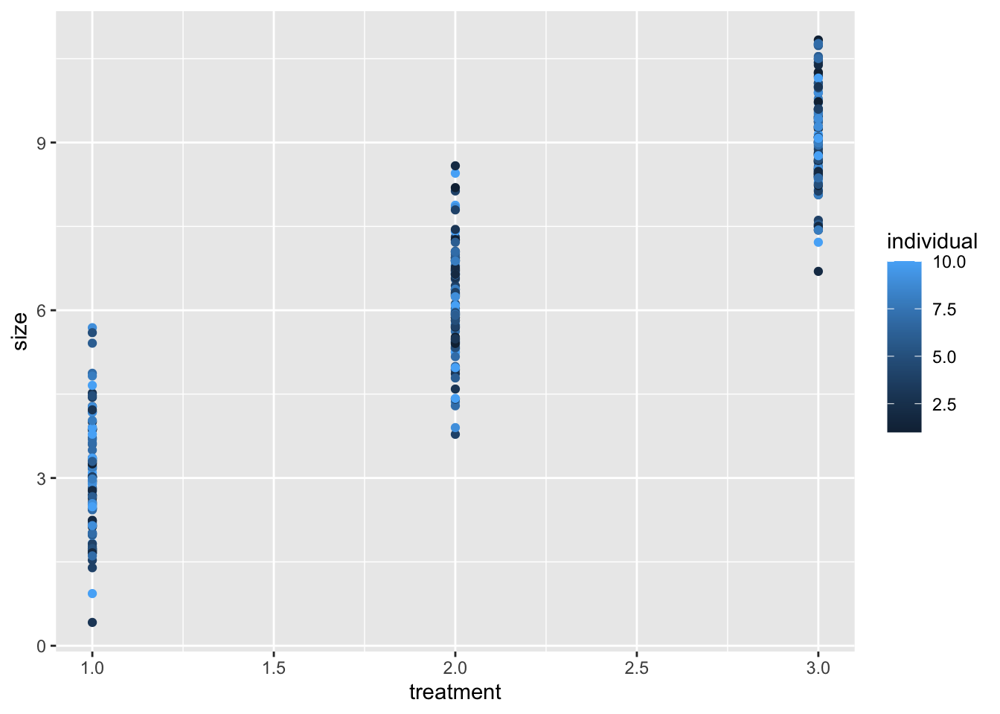
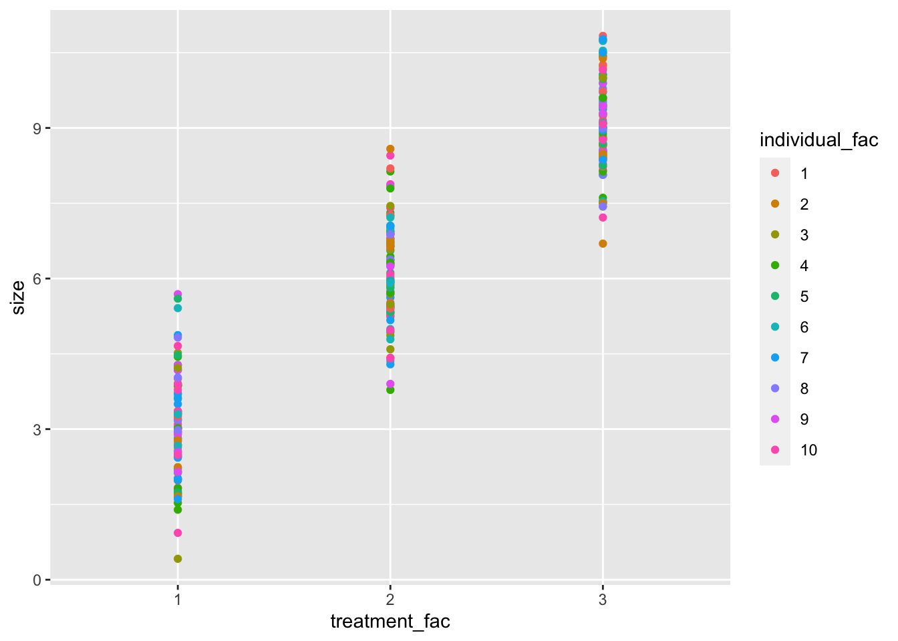

Chapter 4 Looping with datasets
In this set of exercises, we will use existing datasets and use looping techniques to read in the data. For example, let’s say you have 10 datasets which you need to read into R into one big dataframe. How to go about this? Along the way you will encounter a bunch of functions from various packages that are helpful when working with data files.
4.1 Preliminaries
When generating large databases, we typically have to join together multiple files. Let us download and save a zip archive containing a bunch of Excel files from here. Unzip the folder in some directory.
There are also some other files in the zip file, they should be maintained there for the sake of the exercise.
4.2 Obtaining a list of files
Use the function list.files() to return a list of files starting with sheet_ and with the extension .xls. The list should return no other files, and hence you will have to make use of the pattern argument of the list.files() function to only list the desired files. The resulting output should look like the following:
## [1] "sheet_1.xls" "sheet_10.xls" "sheet_2.xls" "sheet_3.xls" "sheet_4.xls"
## [6] "sheet_5.xls" "sheet_6.xls" "sheet_7.xls" "sheet_8.xls" "sheet_9.xls"Hence, other files that are contained in the zip folder, like another_excel_file.xls or sheet_other.txt, should not feature in the resulting list.
4.3 Obtaining a list of files with full path names
Again, use the function list.files() from above, but make sure that it returns the complete path names, rather than just only the names of the sheets. Read the documentation of list.files() to see which argument(s) you will have to tweak in order for it to return full path names. Output should look like the following, except that your file system is different:
## [1] "/Users/bram/Projects/exercises_r/r_exercises_bookdown/code//sheet_1.xls"
## [2] "/Users/bram/Projects/exercises_r/r_exercises_bookdown/code//sheet_10.xls"
## [3] "/Users/bram/Projects/exercises_r/r_exercises_bookdown/code//sheet_2.xls"
## [4] "/Users/bram/Projects/exercises_r/r_exercises_bookdown/code//sheet_3.xls"
## [5] "/Users/bram/Projects/exercises_r/r_exercises_bookdown/code//sheet_4.xls"
## [6] "/Users/bram/Projects/exercises_r/r_exercises_bookdown/code//sheet_5.xls"
## [7] "/Users/bram/Projects/exercises_r/r_exercises_bookdown/code//sheet_6.xls"
## [8] "/Users/bram/Projects/exercises_r/r_exercises_bookdown/code//sheet_7.xls"
## [9] "/Users/bram/Projects/exercises_r/r_exercises_bookdown/code//sheet_8.xls"
## [10] "/Users/bram/Projects/exercises_r/r_exercises_bookdown/code//sheet_9.xls"In future uses of list.files(), retaining the full path name saves a lot of hassle, as it means that any future script can use the output of list.files() without having the locate the actual directory of the excel sheets.
We store the list of files that you obtained using the list.files() function above for future use, in a variable xls_sheet_list.
4.4 Open a single file
Use the read_excel() function from the readxl package to read the first excel file of the list (i.e., xls_sheet_list[[1]]) into a variable. Specifically, read_excel() reads data from the excel sheet into a so-called tibble, which is tidyverse ’s more modern version of a data.frame.
Subsequently, use print() to display the file’s path name and then, below, print the first five lines of the resulting tibble. One can do so by using the slice_head() function from the dplyr package. The resulting output should look like the following:
## [1] "/Users/bram/Projects/exercises_r/r_exercises_bookdown/code//sheet_1.xls"## # A tibble: 5 × 3
## treatment individual size
## <dbl> <dbl> <dbl>
## 1 1 1 3.27
## 2 2 1 5.87
## 3 3 1 9.25
## 4 1 2 2.93
## 5 2 2 5.254.5 Getting information about each file within a for-loop
Now we will use a for-loop to go through the list of files and read each file into a tibble using read_excel(). Subsequently, we can then request some information about the current excel sheet by interrogating the resulting tibble. Here, we merely print the path name of each file (which you already have done previously), the number of rows contained in the tibble (using either nrow() or tidyverse’s tally()) and the names of all the columns using the names() function. Hence, output should look like the following:
## [1] "path name: /Users/bram/Projects/exercises_r/r_exercises_bookdown/code//sheet_1.xls"
## [1] "rows: 30"
## [1] "column names: treatment,individual,size"
## [1] "path name: /Users/bram/Projects/exercises_r/r_exercises_bookdown/code//sheet_10.xls"
## [1] "rows: 30"
## [1] "column names: treatment,individual,size"
## [1] "path name: /Users/bram/Projects/exercises_r/r_exercises_bookdown/code//sheet_2.xls"
## [1] "rows: 30"
## [1] "column names: treatment,individual,size"
## [1] "path name: /Users/bram/Projects/exercises_r/r_exercises_bookdown/code//sheet_3.xls"
## [1] "rows: 30"
## [1] "column names: treatment,individual,size"
## [1] "path name: /Users/bram/Projects/exercises_r/r_exercises_bookdown/code//sheet_4.xls"
## [1] "rows: 30"
## [1] "column names: treatment,individual,size"
## [1] "path name: /Users/bram/Projects/exercises_r/r_exercises_bookdown/code//sheet_5.xls"
## [1] "rows: 30"
## [1] "column names: treatment,individual,size"
## [1] "path name: /Users/bram/Projects/exercises_r/r_exercises_bookdown/code//sheet_6.xls"
## [1] "rows: 30"
## [1] "column names: treatment,individual,size"
## [1] "path name: /Users/bram/Projects/exercises_r/r_exercises_bookdown/code//sheet_7.xls"
## [1] "rows: 30"
## [1] "column names: treatment,individual,size"
## [1] "path name: /Users/bram/Projects/exercises_r/r_exercises_bookdown/code//sheet_8.xls"
## [1] "rows: 30"
## [1] "column names: treatment,individual,size"
## [1] "path name: /Users/bram/Projects/exercises_r/r_exercises_bookdown/code//sheet_9.xls"
## [1] "rows: 30"
## [1] "column names: treatment,individual,size"4.6 Accumulating all tibbles into a single big tibble
Now try to accumulate all tibbles into a big one. Before we start our for loop, we assign an empty tibble (i.e., tibble()) to a variable, say super_tbl. Starting with an empty tibble makes sure that when we run our script again, super_tbl does not retain the contents of any previous runs of the same script.
Then, during each iteration of the for-loop, we append the contents of each excel sheet to this super_tbl variable by using the function bind_rows(). We then assign the result of this function back to super_tbl, so that super_tbl grows during each iteration with the contents of each excel sheet.
Finally, we then just use print(super_tbl) and the summary() function to inspect the result
## # A tibble: 300 × 3
## treatment individual size
## <dbl> <dbl> <dbl>
## 1 1 1 3.27
## 2 2 1 5.87
## 3 3 1 9.25
## 4 1 2 2.93
## 5 2 2 5.25
## 6 3 2 9.58
## 7 1 3 4.18
## 8 2 3 6.27
## 9 3 3 9.37
## 10 1 4 1.40
## # … with 290 more rows## treatment individual size
## Min. :1 Min. : 1.0 Min. : 0.4171
## [ reached getOption("max.print") -- omitted 5 rows ]4.7 Plotting the data
The next task is to use ggplot2 to plot the contents of super_tbl. Specifically, we plot the size on the \(y\)-axis and the different treatments on the \(x\)-axis, while the colors of the points should reflect the different individuals. We use points, rather than lines, by using geom_point(). On ggplot2’s website you can also download an elegant cheat sheet that is very helpful in achieving this.

4.8 Data modification / conversion
As you can see when you print() the contents of super_tbl, all data types have the type of a <dbl> (double), which stands for double-precision floating point value. Such floating point values are typically used for data which varies in a continuous fashion, as is the case for the size column in super_tbl.
However, we often code treatments, and sometimes also individuals (if there are only a few, like here), as discrete factors at a nominal scale, meaning that number ‘1’ is not necessarily lower than ‘2’, it is merely an identifier of that treatment or individual. To accomplish this, we convert the individual and treatment column from <dbl> to <fct>, which stands for factor.
To convert values into factors, we might either use the old-style function as.factor() or we might use the more modern as_factor() function from the haven package. For this example there is no difference between both functions, but in general as_factor() is slightly more generic.
How to change our data using the as_factor() function? What we can do is apply the function to the columns in question, by using the mutate() function from the dplyr() package. Using this mutate() function (you have been checking the examples on the manual page, right?), we can then add two new columns to our data frame, say individual_fac and treatment_fac which reflect our new factor data.
If we now plot our new individual_fac and treatment_fac columns, our plot will look slightly different:

Can you describe what is different between this plot and the previous one and why?
4.9 A further aside: regular expressions
The next exercise focuses on changing the data during the for loop that we used in section @ref{forLoop}.
Consider the following scenario: your supervisor tells you (belatedly, as always) that they have omitted some relevant detail in the previous analysis. It turns out that the size measurements in the first 4 excel sheets (i.e., sheet_1.xls, sheet_2.xls, sheet_3.xls and sheet_4.xls) were performed on a different breed of individuals (breed A), while measurements from other excel sheets used animals of breed B.
Let us visually inspect whether the relationship between treatment and size is different for the two different breeds of animals. To this end, we do not modify the underlying excel sheets, rather we add the column breed to the tibbles when reading in the data from each excel sheet. The breed column should have the values A for the first four sheets and the value B for the remaining sheets respectively.
A first suggestion may be to simply keep track of at which of the excel sheets we are when looping over the xls_sheet_list variable which contains all the files (see section @ref{forLoop}), and then set the breed variable according to an if else statement (i.e., first 4 files A, remaining files B). However, if you look at the listing of files in section @ref{fileList} above, you will see that sheet_10.xls (breed B) is at the second position in the variable xls_sheet_list, so using a simple rule like that is not going to work.
4.9.1 Regular expressions to the rescue
Hence, we need to inspect the filenames themselves and sort out sheet_1.xls, sheet_2.xls, sheet_3.xls and sheet_4.xls from the rest. How to do this? Regular expressions are a great way to filter numbers from textual data.
While we are not delving into regular expressions now,